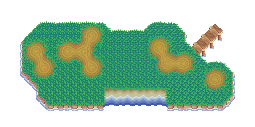
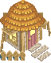

.png)
.png)
.png)
.png)
.png)
.png)
.png)
.png)
.png)
.png)
.png)
.png)


1.4 DIGITAL DRAWING TOOLS 15.-17.12.2025
AUFGABE: Erstelle ein digital drawing tool oder shape generator
IDEE: Aliens mit Hüten
Zuerst hatten wir verschiedene Fragen für das Tool, was wir erstellen wollen. Sowas wie „What does the tool do?“ oder „Who is the tool for?“
Hüte -> Aliens -> Aliens mit Hüten. Diese Idee verfolgte ich die ganze Aufgabe lang. Hieraus entstand dann mein Tool, was für Aliens entwickelt wurde. Aliens haben nun eine schwierige Zeit sich Morgens fertig zu machen, da sie zu viel Auswahl an Hüten haben.
Mein fertiges Tool ist fast wie ein Dress-Up Game. Es gibt kein Ziel, sondern endlose Kombinationen an Farbe, Transparenz, Postion und weiters. Bei den Open Studios 2026 wurden unsere Webseiten ausgestellt. Mir wurde erzählt, dass ein Kind sehr Lange (5 Minuten) an meiner Website herumgespielt hat und Aliens Hüten angezogen hat. Somit würde ich behaupten das Ziel des spielerischen Charakters der Webseite wurde erfüllt.
1.1 DRAWING ALGORITHM
DRAWING ALGORITHM 03.11.2025
AUFGABE: Mach eine Beschreibung zu deiner Skizze, sodass man sie perfekt nachzeichnen kann
IDEE: Mond und Pfeile?
Hier sollten wir eine simple Skizze erstellen und diese beschreiben. Dann sollte jemand anderes diese Skizze per Beschreibung Nachzeichnen. Dies funktionierte immer eher mäßig, da es wirklich schwierig ist akkurat, ohne zu viel Text, etwas zu beschreiben. Da man vor sich hat, wie es Aussieht finde ich es besonders schwierig, weil man sich denkt „das sollte man verstehen, ist ja einfach“.
.png)
.png)
.png)
.png)
.png)
HTML INPUT 03.11.2025
AUFGABE: Probier dich an HTML (und CSS)
IDEE: Ananas aus der Dose?
Anfangs sollten wir spielerisch herausfinden wie HTML funktioniert. Anschließend zum Designen wurde noch CSS hinzugefügt.
Ich habe mich entschlossen meine Seite nach „Ananas aus der Dose“ zu thematisieren.
Woher kommt aber Ananas aus der Dose? Mein Kunstlehrer sang im Unterricht gerne Lieder, „Ananas aus der Dose“ ist eines von diesen. Also ist Ananas aus der Dose wohl ein Lied, ein mir unbekanntes.
Es hat Spaß gemacht diese Website zu erstellen. Es erinnerte mich ein wenig an Informatik Unterricht von der 8.–10. Klasse, wo wir eine ähnliche Aufgabe hatten. Ein bisschen nostalgisch. Probleme hatte ich so eher weniger hier.
.png)
TEXT SYSTEMS 04.11.2025
AUFGABE: Designe eine Website mit vorgefertigter Information
IDEE: Wie eine Rolle aus dem Mittelalter, Pergament
Die Gestaltung der vorgefertigten Seite war schwierig. Da wir nicht von Anfang an hier etwas erstellten, sondern mit vorhandenem Code, musste man sich erstmal ein Überblick verschaffen. Mein Design ist auch nicht das einfallsreichste, da ich ein paar Probleme hatte den Hintergrund zu einem Bild zu machen und danach nur noch wenig Zeit hatte.
.png)
1.7 REFLECTION
Ich finde, dass das Semester mich persönlich sehr weiter gebracht hat.
Das nutzen von Adobe Programmen, besonders InDesign und Photoshop, liegt mir nun um einiges besser. Das Gestalten beziehungsweise Layouten in den beiden Programmen ist eine sehr wichtige Fähigkeit welche ich für die Zukunft definitiv brauchen werde.
Die Verschiedenen Designer die wir besucht haben, haben mir ein sehr guten Einblick in der Berufswelt gegeben. Das Coding selbst ein Skill ist, die (Web-) DesignerInnen beherrschen sollten hätte ich nie wirklich selbst in betracht bezogen. Da muss ich sagen, dass es wirklich sehr Sinnvoll ist für die digitalen Grundlagen dies in betracht zu ziehen, anstatt nur „einfaches“ Photoshop und ähnliches.
Besonders spaß haben die sehr verschiedenen Aufgaben gemacht. Ich fand auch das herangehen mit analogen Mittel sehr praktisch für mich selbst, da ich es mir viel besser visualisieren konnte als ausschließlich digital. Vor meinem Studium habe ich nämlich wenig Digitales gemacht, obwohl es doch so viel spaß macht.
Am liebsten gefiel mir die Digital Drawing Tool Aufgabe, wo ich meine Aliens mit Hüten gemacht habe. Ich wäre selbst nie auf diese Idee gekommen, ohne die vorherigen Fragen und mein Uni-Umfeld. Ich würd schon sagen das ich relativ Stolz darauf bin, besonders weil dieses Tool in einer sehr Kurzen Zeit entstand, ohne viel Vorwissen zu haben im Coding-Feld.
Ich bin sehr gespannt und freu mich schon extrem was wir im nächsten Semester, mit Insa dann, machen werden!
1.2 VARIABLES & PARAMETERS
MORPHOLOGICAL BOX & THE MAGIC TRIANGLE 17.11.2025
AUFGABE: Fülle ein Sheet mit eigenen Eigenschaften & Vorgefertigteb
IDEE: Wie weit entfernt können die Eigenschaften verbunden aussehen?
Wir sollten einmal Selbst ein Grid erstellen und dieses mit Eigenschaften versehen. Hieraus sollten wir sie dann verbinden und eine Form erstellen, welche diese Eigenschaften entspricht. Ich habe versucht relativ abstrakt zu denken und sehr verschiedene Formen zu erstellen, die meine Eigenschaften trotzdem noch beinhalten.
.png)
.png)
.png)
CSS DRAWING 05.11.2025
AUFGABE: Erstelle ein Bild ausschließlich mit CSS (und HTML)
IDEE: Janas Flasche
Bei dieser Aufgabe sollten wir eine Grafik, bzw. ein Bild, nur aus CSS erstellen. Das heißt mit einzeln designten Blöcken, Strichen, Text und so weiter. Ich habe Janas Flasche gemacht, da sie vor mir stand und eine kleine Herausforderung darstellte, durch die Kurven und abgeschnittenen Linien.
.png)
FOLLOW UP
FORM FOLLOWS INTERACTION 18.11.2025
AUFGABE: Mache dein CSS Bild interaktiv
IDEE: Janas Flasche öffnen
Hier versuchte ich Janas Flasche zu öffnen, was nur mäßig funktionierte. Der Deckel bewegt sich in ihren 3 einzelnen Teilen, und nicht als ganzes. Schwierig war es herauszufinden wie man es beweglich macht, sodass es Sinn ergibt.
.png)
1.3 GRIDS AND MODULES
GRID-CONSTRUCTION 01.12.2025
AUFGABE: Create your own grids, stencils or modular shapes
IDEE: Schrift aus Kartoffel-Modulen
In dieser Aufgabe hatten wir erst Stencils und Module um Schriften, bzw. Buchstaben, herzustellen. Ähnlich wie Blockhaus hatten wir Module aus dem wir den Buchstaben A in verschiedenen Varianten herstellten. Hieraus entwickelte ich die Idee Kartoffel-Stempel zu machen.
.png)
.png)
.png)
.png)
.png)
FOLLOW-UP
GRID-BASED TYPE DESIGN 02.12.2025
Mit diesen Stempeln entwickelte ich eine Schrift, welche ich BuildABrick getauft habe, da sie sozusagen piece by piece entstand.
Diese Schrift hat später auch ein Nutzen gefunden in meinem Drawing Tool. Die Schrift benutzt nur fünf verschiedene Module für alle Buchstaben. Später, als ich sie digitalisiert habe, habe ich noch Großbuchstaben hinzugefügt. Dies habe ich mit Illustrator und Calligraphr gemacht, aber komplett digital. So sind auch, theoretischer Weise, mehr Module entstanden.
.png)
.png)
1.5 TOOLS & PRINT 12.-14.01.2026
AUFGABE: Erstellt eine Sammlung und macht hieraus dein Druck
IDEE: Sachen die ein diebische Elster mitgehen lassen würde
Über die Weihnachtsferien sollten wir sammeln. Unsere Gruppe (Adrian, Mia, Ich) entschieden uns für „Sachen die eine Elster mitgehen lassen würde“.
Was klauten wir? Alles was Glänzt. In der ersten Woche suchten wir Material, entwickelten Prototypen und eigneten uns Wissen und Material an. Dies Ging von Klauen in Bibliotheken bis hin zu Alten Dias von Werken über Elstern. Unsere Idee war ein Booklet mit verschiedenen Begriffen für „klauen“. Auf dem Poster war die Idee die Antworten unsere Umfrage, die wir nach der Wissens-Woche entwickelten, zu benutzen.
Es war bei uns immer ein bisschen Hektisch, da wir erst Kurz vor dem Drucken fertig wurden. Bei der Umfrage waren wir sogar schon Dran mit dem drucken und mussten die Umfrage erstmal gestalten. Es war super spannend mit Zeitstress umzugehen und was man in einer so kurzen Zeit des Entwickelns kann.
.JPG)
.png)
.jpg)
.jpg)
.jpg)
.jpg)
.png)
.png)
.png)
.png)
.png)
1.6 THE USE OF AI
Persönlich bin ich nicht der größte Fan von KI, mann muss es ihr aber lassen, dass sie bei vielen Sachen, besonders beim Animieren mit JS, einiges vom Workload abnimmt. Ohne KI wäre es mir definitiv nicht möglich gewesen akkurat in JS zu animieren. Selbst nur das fragen von einfachen Sachen, die einem entfallen sind, kann die KI schnell lösen.
Vom Design her habe ich aber eigentlich alles selbst gemacht. Ich habe mir ein Grundbaustein, von der KI, bauen lassen, welchen ich dann komplett selbst Design habe. Dies aber erst bei der Funktionalität der Website. Das bauen der Insel und ihrer Bestandteile habe ich selbst gemacht. Ich habe versucht Fehler korrigieren zu lassen von der KI, wie z.B. dass Scaling issue (die Website funktioniert nur auf 100% und Safari nach meinem Testen), welches aber nicht funktionierte.
Für mich selbst muss ich gestehen, dass ich finde das ich zu viel KI benutzt habe. Aber um ein Vision umzusetzen mit begrenzter Zeit ist KI ein sehr einfaches Tool um dies hinzubekommen. Besonders bei Animationen hat KI mir sehr geholfen.